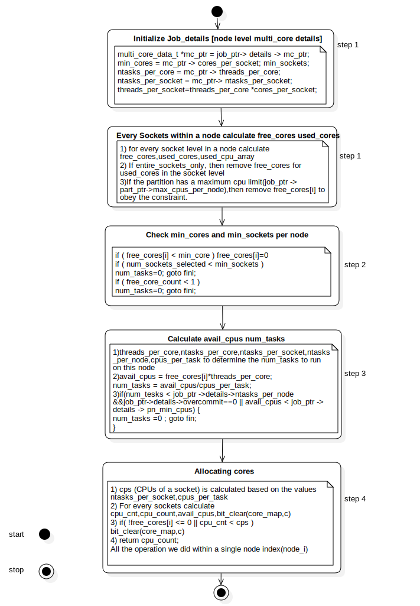
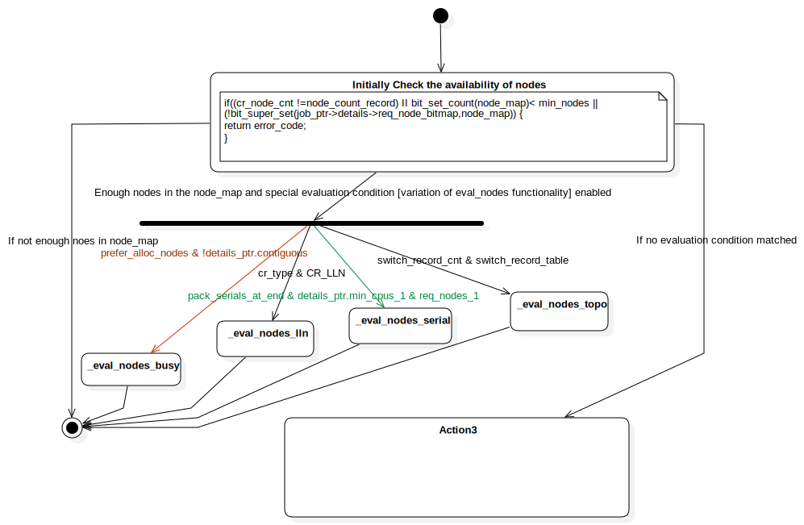
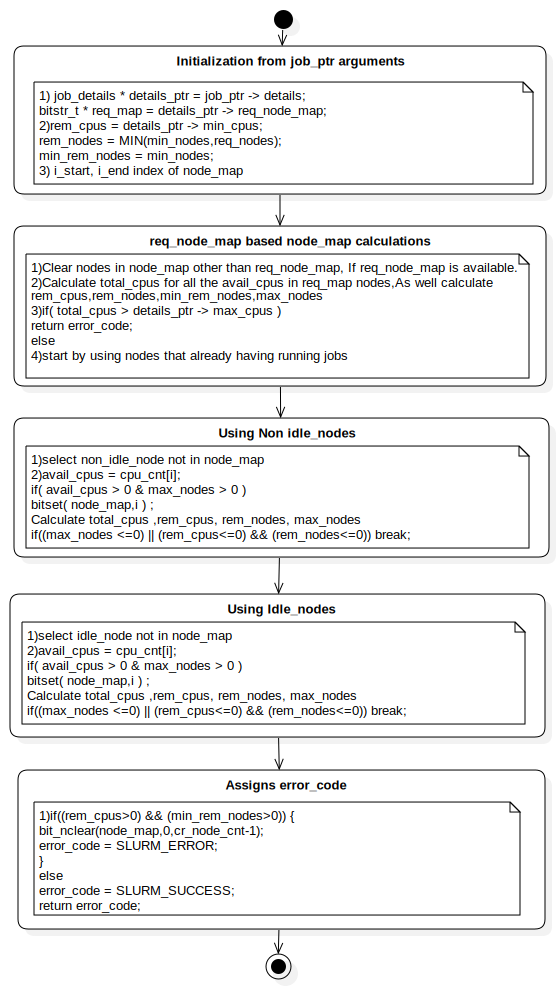
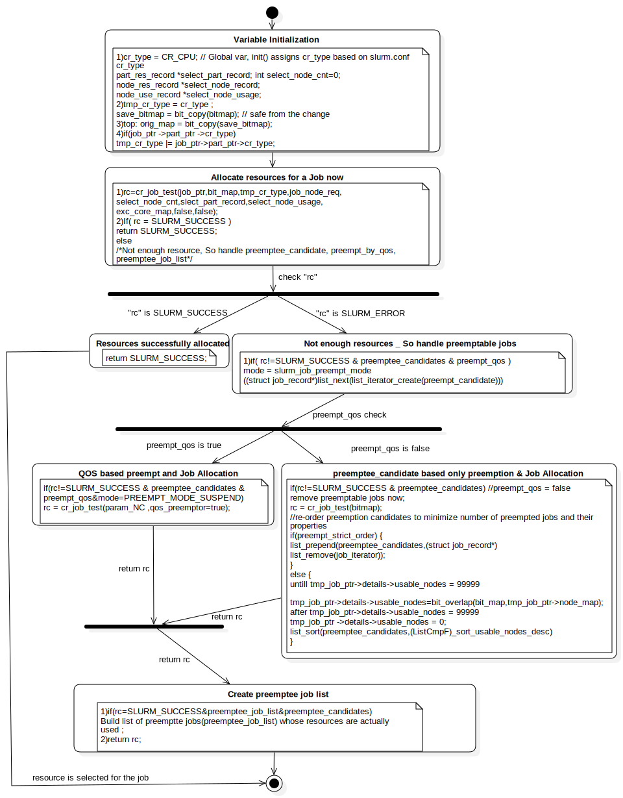

Activity1
UMLActivity
select_consres
::
select_consres-LV
::
Activity1
Description
none
Diagrams

allocate_sc_AD

eval_nodes_AD

eval_nodes_busy_AD
cr_job_test_AD

run_now_AD
Nodes
Initialize Job_details [node level multi_core details]
Every Sockets within a node calculate free_cores used_cores
entire_sockets_only
max_cpus_per_node
Check min_cores and min_sockets per node
Calculate avail_cpus num_tasks
Action1
Action2
InitialNode1
Allocating cores
ActivityFinalNode1
InitialNode2
Initially Check the availability of nodes
ForkNode1
JoinNode1
_eval_nodes_busy
_eval_nodes_lln
_eval_nodes_serial
_eval_nodes_topo
ActivityFinalNode2
InitialNode3
ActivityFinalNode3
InitialNode4
Initialization from job_ptr arguments
req_node_map based node_map calculations
Action3
Using Non idle_nodes
Using Idle_nodes
Assigns error_code
ActivityFinalNode4
Variable Initialization
Allocate resources for a Job now
Not enough resources _ So handle preemptable jobs
InitialNode5
ActivityFinalNode5
ForkNode2
Resources successfully allocated
ForkNode3
QOS based preempt and Job Allocation
preemptee_candidate based only preemption & Job Allocation
JoinNode2
Create preemptee job list
Edges
(entire_sockets_only→max_cpus_per_node)
(InitialNode1→Initialize Job_details [node level multi_core details])
(Initialize Job_details [node level multi_core details]→Every Sockets within a node calculate free_cores used_cores)
(Every Sockets within a node calculate free_cores used_cores→Check min_cores and min_sockets per node)
(Check min_cores and min_sockets per node→Calculate avail_cpus num_tasks)
(Calculate avail_cpus num_tasks→Allocating cores)
(Allocating cores→ActivityFinalNode1)
(InitialNode2→Initially Check the availability of nodes)
Enough nodes in the node_map and special evaluation condition [variation of eval_nodes functionality] enabled (Initially Check the availability of nodes→ForkNode1)
prefer_alloc_nodes & !details_ptr.contiguous (ForkNode1→_eval_nodes_busy)
cr_type & CR_LLN (ForkNode1→_eval_nodes_lln)
pack_serials_at_end & details_ptr.min_cpus_1 & req_nodes_1 (ForkNode1→_eval_nodes_serial)
switch_record_cnt & switch_record_table (ForkNode1→_eval_nodes_topo)
(_eval_nodes_busy→JoinNode1)
(_eval_nodes_lln→JoinNode1)
(_eval_nodes_serial→JoinNode1)
(_eval_nodes_topo→JoinNode1)
If no evaluation condition matched (Initially Check the availability of nodes→Action3)
(_eval_nodes_busy→ActivityFinalNode2)
(_eval_nodes_lln→ActivityFinalNode2)
(_eval_nodes_serial→ActivityFinalNode2)
(_eval_nodes_topo→ActivityFinalNode2)
If not enough noes in node_map (Initially Check the availability of nodes→ActivityFinalNode2)
(InitialNode4→Initialization from job_ptr arguments)
(Initialization from job_ptr arguments→req_node_map based node_map calculations)
(req_node_map based node_map calculations→Using Non idle_nodes)
(Using Non idle_nodes→Using Idle_nodes)
(Using Idle_nodes→Assigns error_code)
(Assigns error_code→ActivityFinalNode4)
(InitialNode5→Variable Initialization)
(Variable Initialization→Allocate resources for a Job now)
check "rc" (Allocate resources for a Job now→ForkNode2)
"rc" is SLURM_SUCCESS (ForkNode2→Resources successfully allocated)
"rc" is SLURM_ERROR (ForkNode2→Not enough resources _ So handle preemptable jobs)
preempt_qos check (Not enough resources _ So handle preemptable jobs→ForkNode3)
preempt_qos is true (ForkNode3→QOS based preempt and Job Allocation)
preempt_qos is false (ForkNode3→preemptee_candidate based only preemption & Job Allocation)
return rc (QOS based preempt and Job Allocation→JoinNode2)
return rc (preemptee_candidate based only preemption & Job Allocation→JoinNode2)
return rc (JoinNode2→Create preemptee job list)
(Create preemptee job list→ActivityFinalNode5)
resource is selected for the job (Resources successfully allocated→ActivityFinalNode5)
Properties
Name
Value
name
Activity1
stereotype
null
visibility
public
isReentrant
true
isReadOnly
false
isSingleExecution
false
Owned Elements
allocate_sc_AD
eval_nodes_AD
eval_nodes_busy_AD
cr_job_test_AD
run_now_AD